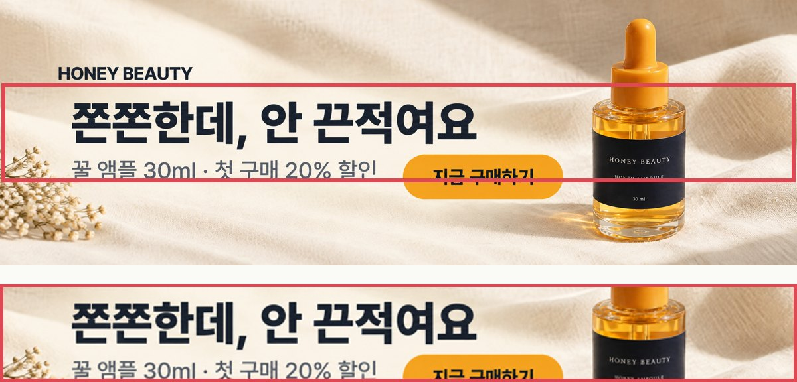
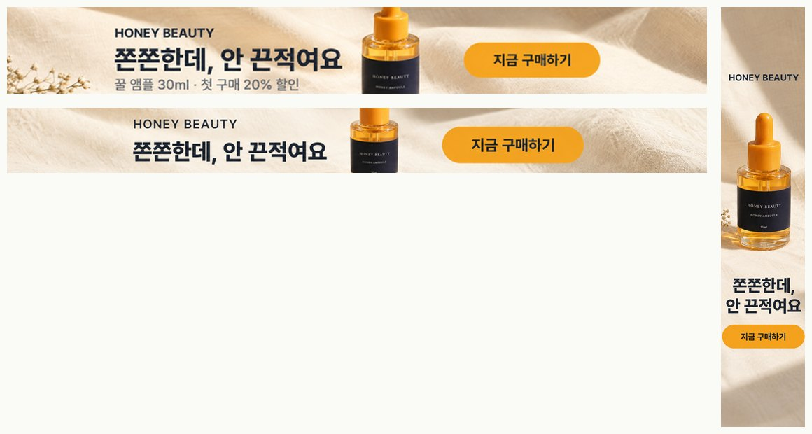
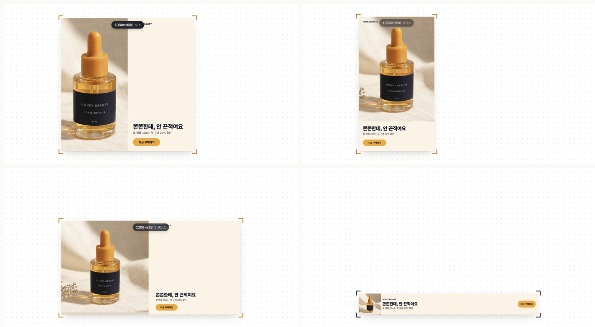

배너 사이즈 바꿀 때,
긴 배너만 잘린다면
배너 사이즈마다 포토샵을 다시 열고 있다면, GPT에 원본이랑 사이즈 목록을 주세요. 배경까지 이어서 새로 그려 줘요. 다만 728×90처럼 아주 긴 배너는 그대로 자르면 로고와 글자가 잘려요. 그래서 잘라도 남는 자리에만 글자를 넣게 하는 템플릿을 만들었어요.
01사이즈만 바꿔 넣는 템플릿
ChatGPT에 원본 배너 이미지를 첨부하고 아래 템플릿을 붙여 넣어요. 맨 위 '만들 사이즈' 칸만 원하는 사이즈로 바꾸고, 나머지 규칙은 그대로 둬요.
[배너 리사이즈 템플릿] 만들 사이즈: [ 728x90, 970x90, 120x600 ] ← 원하는 사이즈만 바꿔 넣기 이 배너를 위 사이즈로 다 바꿔 줘. 이미지 생성으로 사이즈별 배너 이미지를 만들어 줘. 1. 원본과 같은 제품, 같은 색, 같은 글자를 그대로 유지해. 문구는 한 글자도 바꾸지 마. 2. 요소는 5개야: 로고 / 헤드라인 / 서브카피 / 제품 / 구매 버튼. 3. 3:1보다 긴 가로 띠는 3:1로, 1:3보다 긴 세로 띠는 1:3으로 그려. 나중에 가운데를 정확한 사이즈로 잘라 쓸 거야. 그래서 5개 요소를 전부 아래 '안전 영역' 안에만 넣고, 그 밖에는 배경(천·빛)만 이어 그려. [안전 영역 표 — 사이즈가 여기 있으면 이 숫자를 그대로 써] 가로 띠(세로 가운데 띠): 728x90 31% · 970x90 24% · 980x120 31% · 930x180 49% · 970x250 66% · 320x50 40% · 300x50 43% · 320x100 80% 세로 띠(가로 가운데 띠): 120x600 50% · 160x600 68% · 300x1050 73% 표에 없는 띠 사이즈는 가로 띠 = 255 ÷ 가로세로 비율(%), 세로 띠 = 255 × 가로세로 비율(%)로 계산해. 4. 가로 띠는 [로고+헤드라인 왼쪽] [제품 가운데, 띠 높이 안에 들어오게 작게] [버튼 오른쪽]을 한 줄로. 안전 영역이 35%보다 좁으면 서브카피는 빼. 세로 띠는 위에서부터 [로고] [제품] [헤드라인 두 줄] [버튼]을 쌓고, 서브카피는 빼. 헤드라인·버튼 폭은 안전 영역 폭의 80% 이하로. 5. 모든 요소는 안전 영역 가장자리에서 8% 안쪽에. 넘치면 글자를 줄여. 글자·버튼이 안전 영역 밖으로 1px도 나가면 안 돼. 6. 다 만든 뒤 표로 알려 줘: 요청 사이즈 / 그린 비율 / 잘라 쓸 영역.
💡 ChatGPT는 한 번에 최대 10장까지 만들어요. 20개가 필요하면 '만들 사이즈'를 10개씩 나눠 두 번 돌려요.
02왜 긴 배너만 잘릴까
GPT 이미지 생성은 728×90 같은 아주 길쭉한 비율을 그대로 못 그리고, 3:1 정도로 그려 줘요. 그걸 728×90으로 자르면 위아래가 잘려 나가면서 로고·글자·버튼도 같이 잘려요. 처음 돌린 10장 중 4장이 요청과 비율이 달랐어요.

템플릿은 "3:1로 그리되, 잘라도 남는 가운데 자리에만 로고·헤드라인·버튼을 넣으라"고 시켜요. 사이즈마다 남는 자리를 % 숫자로 표에 넣어 둔 게 핵심이에요. 숫자 없이 GPT가 계산하게 했더니 970×90에서 로고가 잘렸어요.
가로로 긴 배너는 255 ÷ (가로÷세로) %, 세로로 긴 배너는 255 × (가로÷세로) %로 계산해 표에 한 줄 추가하세요. 예: 468×60 → 255 ÷ 7.8 ≈ 33%.
03시험해 본 결과
템플릿으로 728×90 · 970×90 · 120×600을 뽑아 정확한 사이즈로 잘랐어요. 세 개 모두 로고 · 헤드라인 · 버튼이 남았어요(2026-10-24, ChatGPT 웹).

04써 보기 전에 꼭
- 시험한 건 긴 배너 3개(728×90 · 970×90 · 120×600)예요. 표의 다른 사이즈는 결과를 꼭 눈으로 확인하세요.
- ChatGPT 이미지 생성은 한 번에 10장까지예요.
- GPT는 제품을 원본 픽셀 그대로가 아니라 새로 그려요. 라벨 글자나 색이 미묘하게 달라질 수 있어서, 실제 제품 광고라면 제품 컷은 원본으로 바꿔 끼우는 게 안전해요.
- 문구도 가끔 바뀌어요. "한 글자도 바꾸지 마"를 넣었지만 올리기 전에 꼭 대조하세요.
- 매체별 규격은 바뀔 수 있어요. 구글은 공식 도움말, 메타는 광고 가이드, 네이버 GFA는 관리자 화면에서 최신 사이즈를 확인하세요.
05덤: 잡고 늘리는 배너 에디터 (Claude)
이미지를 새로 그리는 대신 원본 요소를 다시 배치하고 싶다면, claude.ai 채팅에 원본 배너를 첨부하고 아래처럼 요청해 보세요. 모서리를 잡고 늘리면 정사각 · 세로 · 가로 띠에 맞춰 배치가 바뀌는 페이지(아티팩트)를 만들어 줘요.

이 배너를 창 크기에 맞춰 알아서 다시 배치되는 배너로 만들어 줘. 모서리를 잡고 늘리거나 줄이면 정사각, 가로 띠, 세로 띠 어떤 비율이든 글자, 로고, 제품 이미지가 안 깨지고 안 잘리게. 한 페이지에서 바로 잡고 늘려 볼 수 있게 아티팩트로 만들어 줘.
두 가지만 고쳐 줘. 1. 모서리를 잡고 끌 때, 잡은 모서리의 반대쪽 모서리는 그 자리에 고정되게 해 줘. 2. 끌다가 자주 쓰는 사이즈(1:1, 4:5, 9:16, 1.91:1, 728×90, 160×600, 300×250) 비율 근처에 오면 그 비율로 착 달라붙고, 붙은 동안 배너 위에 '1080×1080'처럼 사이즈 이름 배지를 잠깐 보여 줘. 나머지 디자인과 배치 규칙은 그대로 둬.
💡 에디터는 사이즈를 바꿔 '보는' 도구예요. 매체에 올릴 PNG는 Claude에 "사이즈별로 PNG로 저장할 수 있게 해 줘"라고 한 번 더 요청하세요.
06출처
- Google Ads 도움말 — 이미지 광고 사이즈
- Meta 광고 가이드 — 이미지
- 네이버 GFA 소재 사이즈 — 대행사 정리 글(AMPM) 기준, 관리자 화면에서 최신값 확인 필요
- 예시 배너는 가상 브랜드 '허니 뷰티'예요.
대행사에서 AI 교육하는 현직 마케터가 직접 써 보고 정리해요.
인스타에서 팔로우